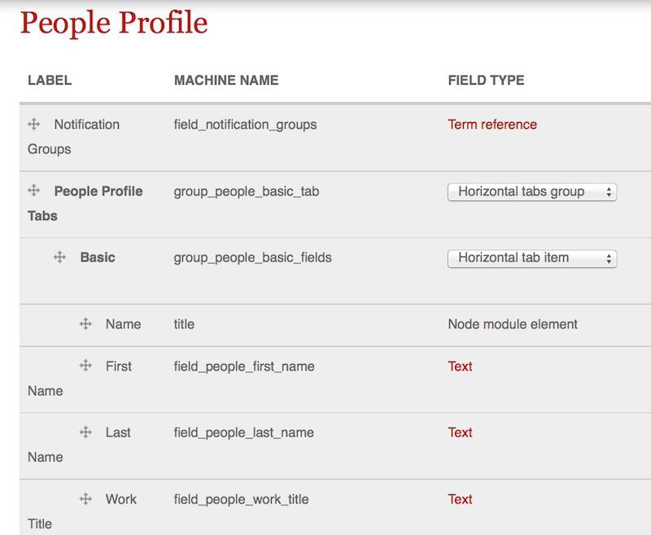
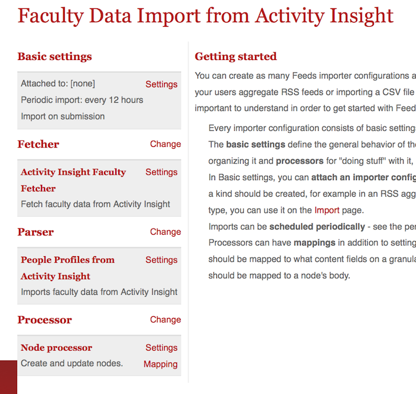
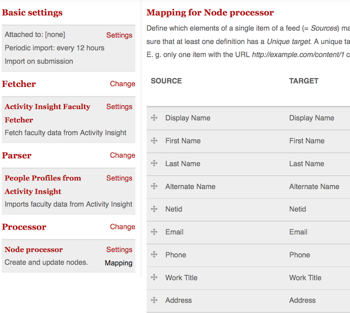
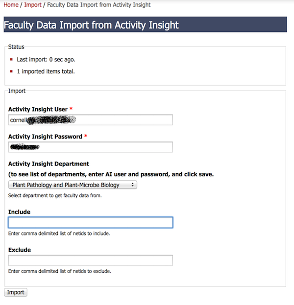
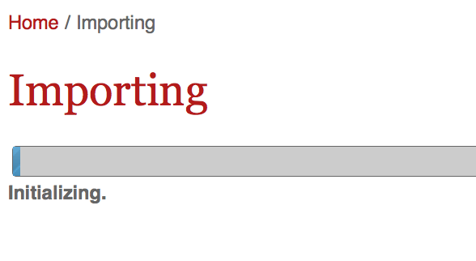
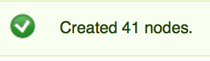

"Proudly Invented Elsewhere"
Leveraging Cornell-related Drupal Solutions Rather than Reinventing the Wheel
Presented by Aaron Froehlich and Eric Banford
Today's Wheels:
- CUWebAuth, Protected Content
- Google CSE
- CU Library New Books
- Faculty Data, AI and Vivo
- News from the Cornell Chronicle
- Events from Localist
Overview
These are Drupal modules that have been created for CALS or ILR, but which can hopefully be useful to others on campus. Rather than reinvent the wheel again and again, we are hoping to foster an open source community that works together to solve some universal needs of the University. Cornell Drupal Camp, Drupal.org, Drupal SIG meetings, and the Drupal Yammer group are some of the ways we are sharing information with each other.
CUWebAuth
The Problem: User authentication with NetID
The Solution:

The Actors

Requirements
- SimpleSAMLphp library
- SSL Certificate
- Session storage db
- simplesamlphp_auth module
Configuration
via the admin interface
via code:
/**
* Implements hook_install().
*/
function ilr_install() {
// Set some default values for the simplesamlphp_auth module
variable_set('simplesamlphp_auth_activate', 1);
variable_set('simplesamlphp_auth_authsource', 'cornell');
variable_set('simplesamlphp_auth_mailattr', 'mail');
variable_set('simplesamlphp_auth_registerusers', 1);
variable_set('simplesamlphp_auth_unique_id', 'uid');
$admin_role = user_role_load_by_name('administrator');
variable_set('simplesamlphp_auth_rolepopulation', "
{$admin_role->rid}:uid,=,atf46|
{$admin_role->rid}:uid,=,ddd1" // etc.
);
// $set the install directory
variable_set('simplesamlphp_auth_installdir', $simplesamlphp_installdir);
}
SAML Response Object

Protected Content
The Problem: Limiting content / functionality to users with valid NetIDs
The Solution:
Nodes vs. entitiesNodes
Custom Publishing Options
/**
* Implements hook_install().
*/
function custom_publishing_options_install() {
$spec = array(
'description' => 'Kerberized publishing option.',
'type' => 'int',
'not null' => TRUE,
'default' => 0
);
db_add_field('node', 'kerberized', $spec);
}
/**
* Implements hook_schema_alter().
*/
function custom_publishing_options_schema_alter(&$schema) {
$schema['node']['fields']['kerberized'] = array(
'description' => t('Kerberized', array('@name' => 'kerberized')),
'type' => 'int',
'not null' => TRUE,
'default' => 0,
);
}
/**
* Implements hook_form_alter()
* Adds the "kerberized" checkbox to the node publishing options tab
*/
function custom_publishing_options_form_alter(&$form, $form_state, $form_id) {
if (isset($form['#node_edit_form']) && $form['#node_edit_form'] === TRUE) {
$node = $form['#node'];
$form['options']['kerberized'] = array(
'#type' => 'checkbox',
'#title' => 'Kerberized',
'#default_value' => isset($node->kerberized) ? $node->kerberized : FALSE,
'#access' => user_access('administer nodes') ? TRUE : FALSE,
);
}
}
Nodes
Content authorization
/**
* Implements hook_node_access().
* Protects "kerberized" nodes from user's without NetID
*/
function basic_page_node_access($node, $op, $account) {
if ($op == 'view' && !empty($node->kerberized)) {
if (!ilr_user_has_netid()) {
drupal_set_message('You must be logged in with your NetID to access this page. Login', 'warning');
return NODE_ACCESS_DENY;
}
}
}
Entities
"Kerberized" setting
/**
* Implements hook_form_FORM_ID_alter.
* Adds the kerberized checkbox to entityform type options
*/
function forms_form_entityform_type_form_alter(&$form, &$form_state, $form_id) {
$default = (isset($form['#entityform_type']->data['kerberized']))
? $form['#entityform_type']->data['kerberized']
: 0;
$form['data']['kerberized'] = array(
'#type' => 'checkbox',
'#title' => t('This form requires NetID authentication'),
'#weight' => 0,
'#default_value' => $default,
);
}
Entities
Entityform authorization
/**
* Implements hook_form_BASE_FORM_ID_alter.
*/
function forms_form_entityform_edit_form_alter(&$form, &$entityform_state, $form_id) {
$entityform_type = entityform_type_load($bundle);
$is_kerberized_form = empty($entityform_type->data['kerberized'])
? FALSE
: $entityform_type->data['kerberized'];
if ($is_kerberized_form) {
_forms_handle_kerberized_form($form);
}
}
/**
* Adds kerberized values to forms when appropriate
* Logs user out if SAML Session missing (e.g. browser was closed)
*/
function _forms_handle_kerberized_form(&$form) {
if (user_is_logged_in()) {
if (ilr_user_has_netid() && _forms_saml_attributes_present()) {
_forms_set_kerberized_values($form); // Not going to review
} // SimpleSAMLAuth info missing, so force the user to log in again
// code redacted for simplicity
} // Remove the form
else {
$form = drupal_get_form('forms_login_form');
}
}
/**
* Returns a simple login button for NetID logins
*/
function forms_login_form($form, &$form_state) {
$form['netid'] = array(
'#markup' => 'You must log in with your NetID to view this form.
NetID Login
',
'#weight' => -10,
);
return $form;
}
Google CSE
The Problem: Creating a user friendly interface for site searching.
Menu Callback / JS
/**
* Implements hook_menu().
*/
function ilr_search_menu() {
$items = array();
$items['search'] = array(
'page callback' => 'ilr_search_results_view',
'access arguments' => array('access content'),
);
$items['admin/config/system/ilr_search'] = array(
'title' => t('ILR Search Settings'),
'description' => t('Configure Google CSE Integration'),
'page callback' => 'drupal_get_form',
'page arguments' => array('ilr_search_admin'),
'file' => 'includes/ilr_search.admin.inc',
'access arguments' => array('administer ilr search'),
'type' => MENU_NORMAL_ITEM,
);
return $items;
}
function ilr_search_results_view() {
$content = '
Please make sure javascript is enabled to see the search results.
';
return $content;
}
(function ($) {
Drupal.behaviors.ilr_search = {
attach: function (context, settings) {
var cx = Drupal.settings.ilr_search.ilr_search_google_key;
var gcse = document.createElement('script');
gcse.type = 'text/javascript';
gcse.async = true;
gcse.src = '//www.google.com/cse/cse.js?cx=' + cx;
var s = document.getElementsByTagName('script')[0];
s.parentNode.insertBefore(gcse, s);
}
};
}(jQuery));
/**
* Implements hook_init()
*
*/
function ilr_search_init() {
if (current_path() == "search") {
if (variable_get('ilr_search_google_key')) {
drupal_add_js(array(
'ilr_search' => array(
'ilr_search_google_key' => variable_get('ilr_search_google_key'),
),
), 'setting');
drupal_add_js(drupal_get_path('module','ilr_search') . '/ilr_search.js');
}
}
}
/**
* Admin form for Google CSE key
*/
function ilr_search_admin($form, &$form_state) {
$form['ilr_search_google_key'] = array(
'#type' => 'textfield',
'#title' => t('Google CSE Key'),
'#default_value' => variable_get('ilr_search_google_key')
);
return system_settings_form($form);
}
Also see the CU-Search module
CU New Books
The Problem: How do I stay up-to-date on publications related to my research interests?
Implementation
/**
* The page callback function defined in hook_menu().
* The rss icon is lifted from theme_feed_icon() in theme.inc
*/
function _cul_new_books_view() {
drupal_add_js(drupal_get_path('module','cul_new_books') . '/cul_new_books.js',
array('type' => 'file', 'scope' => 'footer'));
drupal_add_js(array(
'cul_new_books' => array(
'allCategories' => _cul_new_books_get_categories(),
),
), 'setting');
// RSS implementation removed for simplicity
$select_menu = drupal_get_form('cul_new_books_select_form_placeholder');
$content .= drupal_render($select_menu);
$content .= _cul_new_books_generate_books_markup();
$page_array = array(
'#markup' => $content,
);
return $page_array;
}
/**
* Generates the markup for the book list
*/
function _cul_new_books_generate_books_markup() {
$markup = '';
$book_json = cul_new_books_get_json();
if (!empty($book_json)) {
foreach($book_json as $book_data) {
$markup .= cul_new_books_generate_book_markup($book_data);
}
}
return $markup;
}
/**
* Retrieves the json from newbooks site or the cache
* Note that the json is updated monthly, on the first of the month
*/
function cul_new_books_get_json() {
if ($cache = cache_get('cul_new_books')) {
$book_json = $cache->data;
} else {
$url = "http://newbooks.mannlib.cornell.edu/rss?location=ILR&format=json";
$data = file_get_contents($url);
$json = json_decode($data, true);
$book_json = $json['results'];
// 60 * 60 * 24 * 14 = 2 weeks
cache_set('cul_new_books', $book_json, 'cache', time() + 60*60*4*14);
}
return $book_json;
}
Faculty Profiles
The Problem: How do I get faculty data from Activity Insight and display it on my site?
Activity Insight, A Faculty Profile
The Solution:
Features + Custom Content Class + Feeds ImporterFaculty Data as XML
Call AI's web service and get...
Eric
Cheyfitz
Ernest I. White Professor of American Studies and Humane Letters
etc7@cornell.edu
Goldwin Smith Hall
157
Faculty Data Content Type
Faculty Data Feeds Importer
Faculty Data Importer Mapping
Importing Faculty Data
Click and wait...
 Cornell Chronicle News
The Problem: How do I pull news tagged "CALS" from the Cornell Chronicle for display on our site?
Cornell Chronicle, CALS RSS Feed
The Solution:
Features + Custom Content Class + Feeds Importer = Does This Seem Familiar?News Processing
Get the XML from http://www.news.cornell.edu/RSS/calscollege.xml
Map it to a custom content type via feeds
Default tags are chronicle and calscomm
Add specific tags to get it to show up in various news displays around the site.
Some News Details
All CALS news stories get brought into every site via cron.
Once a stories is saved, you can change it however you want, it will not be overwritten.
You add specific tags to get stories to show up where you want them, which is very flexible.
Localist Events
The Problem: How do I pull events from the Localist calendar for display on our site?
The Solution:
Beans + Blocks = Tag Specific Events DisplayedThe Secret Sauce
/**
* Displays the bean.
*/
public function view($bean, $content, $view_mode = 'default', $langcode = NULL) {
$keyword_params = EventBlockBean::generate_keyword_params($bean->keywords);
$cache_key = EventBlockBean::get_cache_key($bean->keywords);
// Caching strategies based on http://www.lullabot.com/articles/beginners-guide-caching-data-drupal-7
if (($cache = cache_get('bean_localist_events-' . $cache_key)) && (time() < $cache->expire)) {
$event_json = $cache->data;
} else {
$url = "http://cornell.localist.com/api/2/events?days=364&pp=999{$keyword_params}";
$data = file_get_contents($url);
$json = json_decode($data, true);
$event_json = $json['events'];
cache_set('bean_localist_events-' . $cache_key, $event_json, 'cache', time() + 3600);
}
$event_count = 0;
$content['events'] = array();
if (empty($event_json)) {
$content['events'][] = array('#markup' => 'There are no events to display.
');
$content['bean'][$bean->delta]['field_more_link'] = array();
} else {
foreach($event_json as $event_data) {
if ($event_count < $bean->events_shown || $bean->events_shown == 0) {
// Deal with localist's funky json structure
$event = $event_data['event'];
$event_start_datetime = strtotime($event['event_instances'][0]['event_instance']['start']);
/** this line causes an error with a chg made to localist feed
$event_start_datetime = strtotime($event['event_instances'][0]['start']);
*/
$event_start_date = format_date($event_start_datetime, 'custom', 'M j');
$event_start_time = format_date($event_start_datetime, 'custom', 'g:i a');
// Create the short formatted date from the first event instance
$event_date = '' . $event_start_date . '' . ($event_start_time != '12:00 am' ? ' | ' . $event_start_time . '' : '');
// Create a shortened description
$event_description = truncate_utf8($event['description_text'], 200, TRUE, TRUE);
// Get the event type if there is one
$event_type_info = (isset($event['filters']['event_types']['0']['name'])) ? " | Event type: {$event['filters']['event_types']['0']['name']}" : '';
// Replace event url string with correct url.
$event_localist_url = str_replace('//cornell.localist.com', '//events.cornell.edu', $event['localist_url']);
// Create the markup
//Event fields include Title, Localist Link, Start Date, Start Time, Description, Location, and Event Type
$markup = "\n";
$markup .= "{$event['title']}
";
$markup .= "{$event_date}
";
$markup .= "{$event_description}
";
$markup .= "Location: {$event['location_name']}";
if ($event_type_info) {
$markup .= "{$event_type_info}\n";
}
$markup .= "
";
// Add the markup to the render array
$content['events'][] = array('#markup' => $markup);
$event_count++;
}
}
}
// Consider caching the render array in the future if event renedering is slow
// See http://omnifik.com/blog/render-arrays-and-cache-drupal-7
$content['events']['#weight'] = '-1';
return $content;
}
THANKS!
Slides at bit.ly/cu-drupal-tools